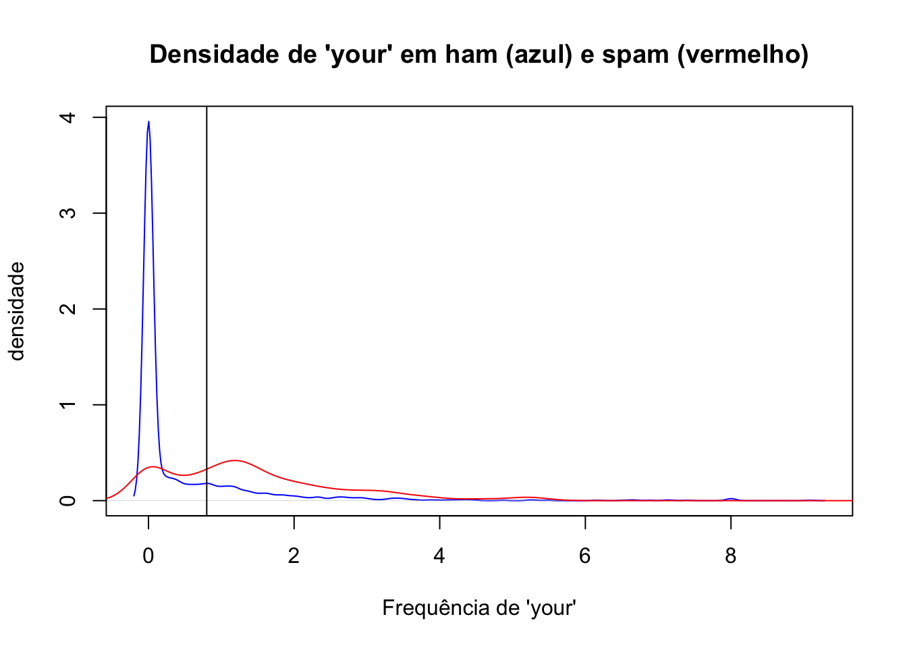

Queremos então construir um algoritmo “preditor” capaz de inferir se um dado pertence ou não a uma certa categoria. O preditor será formado dos seguintes componentes:
O nosso objetivo é responder a uma pergunta de tipo “O dado A é do tipo x ou do tipo y?”. Por exemplo, podemos querer saber se é possível detectar automaticamente se um e-mail é um spam ou um “ham”, isto é, não spam. O que na verdade queremos saber é: “É possível usar características quantitativas para classificar um e-mail como spam?”.
3.2Amostra de Entrada
Uma vez formulada a pergunta, precisamos obter uma amostra de onde tentaremos extrair informações que caracterizam a categoria a qual um dado pertence e então usar essas informações para classificar outros dados não categorizados. O ideal é que se tenha uma amostra grande, assim teremos melhores parâmetros para construir nosso preditor.
No caso da pergunta sobre um e-mail ser spam ou não, temos acesso a base de dados “spam” disponível no pacote “kernlab”, onde cada linha dessa base é um e-mail e nas colunas temos a porcentagem de palavras e números contidos em cada e-mail e, entre outras coisas, a nossa variável de interesse “type” que classifica o e-mail como spam ou não:
Obtida a amostra, precisamos dividi-la em duas partes que chamaremos de Conjunto de Treino e Conjunto de Teste. O conjunto de treino será usado para construir o algoritmo. É dele que vamos extrair as informações que julgarmos utéis para classificar uma categoria de dado. É importante que o modelo de previsão seja feito com base apenas no conjunto de treino.
Após construido o algoritmo, usaremos o conjunto de teste para obter a estimativa de erro, que será detalhada mais a frente.
3.3Características
Temos que encontrar agora características que possam indicar a categoria dos dados. Podemos, por exemplo, vizualizar algumas variáveis graficamente para obter uma ideia do que podemos fazer. No nosso exemplo de e-mails, podemos querer avaliar se a frequência de palavras “your” em um e-mail pode indicar se ele é um spam ou não.
plot(density(treino$your[treino$type=="nonspam"]), col="blue", main ="Densidade de 'your' em ham (azul) e spam (vermelho)", xlab ="Frequência de 'your'", ylab ="densidade")lines(density(treino$your[treino$type=="spam"]), col="red")
Pelo gráfico podemos notar que a maioria dos e-mails que são spam têm uma frequência maior da palavra “your”. Por outro lado, aqueles que são classificados como ham (não spam) têm um pico mais alto perto do 0.
3.4Algoritmo
Com base nisso podemos construir um algoritmo para prever se um e-mail é spam ou ham. Podemos estimar um modelo onde queremos encontrar uma constante c tal que se a frequência da palavra “your” for maior que c, então classificamos o e-mail como spam. Caso contrário, classificamos o e-mail como não spam.
Vamos observar graficamente como ficaria esse modelo se c=0.8.
plot(density(treino$your[treino$type=="nonspam"]), col="blue", main ="Densidade de 'your' em ham (azul) e spam (vermelho)", xlab ="Frequência de 'your'", ylab ="densidade")lines(density(treino$your[treino$type=="spam"]), col="red")abline(v=0.8,col="black")

Os e-mails à direita da linha preta seriam classificados como spam, enquanto que os à esquerda seriam classificados como não spam.
Podemos ver que quando os e-mails não eram spam e classificamos como “não spam”, de acordo com nosso modelo, em 50% do tempo nós acertamos. Quando os e-mails eram spam e classificamos ele em spam, por volta de 26% do tempo nós acertamos. Então, ao total, nós acertamos por volta de 50+26=76% do tempo. Então nosso algoritmo de previsão tem uma precisão por volta de 76% na amostra treino.
Já na amostra teste acertamos 48+27=75% das vezes. O erro na amostra teste é o que chamamos de erro real. É o erro que esperamos em amostras novas que passarem por nosso preditor.
3.4.2Como construir um bom algoritmo de aprendizado de máquina?
O “melhor” método de aprendizado de máquina é caracterizado por:
Uma boa base de dados;
Reter informações relevantes;
Ser bem interpretável;
Fácil de ser explicado e entendido;
Ser preciso;
Fácil de se construir e de se testar em pequenas amostras;
Fácil aplicar a um grande conjunto de dados.
Os erros mais comuns, que se deve tomar um certo cuidado, são:
Tentar automatizar a seleção de variáveis (características) de uma maneira que não permita que você entenda como essas variáveis estão sendo aplicadas para fazer previsões;
Não prestar atenção a peculiaridades específicas de alguns dados, como comportamentos estranhos de variáveis específicas;